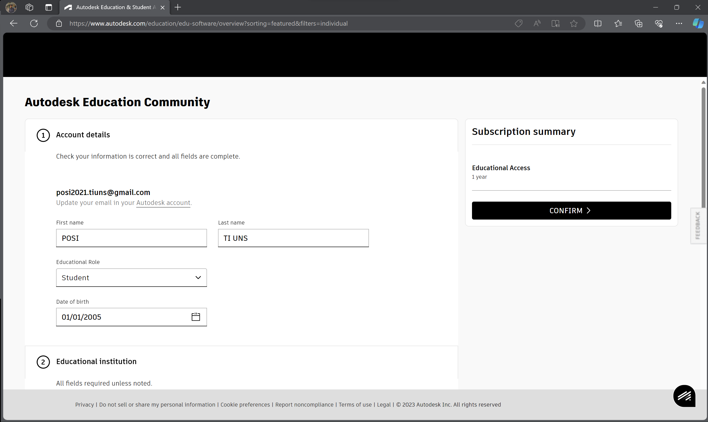

1.1. Instalasi Autodesk Inventor
Perlu temen-temen ketahui, Autodesk Inventor terbilang cukup berat. Jadi, sebelum melakukan instalasi, kalian bisa periksa terlebih dahulu spesifikasi minimal yang dibutuhkan untuk menjalankan software ini agar dapat dijalankan dengan lancar. Spesifikasi minimum yang dibutuhkan dapat kalian lihat di sini.
Jika kalian sudah siap, langsung saja ke tutorial meng-install Autodesk Inventor 2022 Education License dibawah ini 👇
Step 1: Pergi ke Website Resmi Autodesk
Cari dan pergi ke website resmi Autodesk. Lalu, pergi ke bagian "Autodesk for students" seperti pada gambar atau kalian juga bisa langsung klik di sini.
Step 2: Buat Akun Educational Access Autodesk
Setelah laman terbuka seperti gambar, klik "Get products".
Setelah laman selanjutnya terbuka, klik "Get started".

Kalian akan dialihkan ke form pembuatan akun Autodesk. Perlu diingat, kalian dapat membuat akun Autodesk kalian menggunakan email SSO kalian untuk mendapatkan akses pelajar. Setelah kalian menjalani proses pembuatan akun, kalian akan diminta melakukan verifikasi email seperti gambar di bawah.
Step 3: Verifikasi E-mail
Periksa pesan dari Autodesk yang masuk ke e-mail kalian. Kalian dapat melakukan verifikasi dengan klik tombol "Verify email" di pesan tersebut.
Step 4: Dapatkan Educational Access
Setelah verifikasi e-mail, kalian akan dialihkan ke laman yang seperti pada gambar. Kalian bisa melakukan pengajuan akses edukasi dengan klik tombol "Get Educational Access".
Kalian akan dialihkan ke laman formulir untuk mengisi data keperluan educational access seperti gambar di bawah. Sesuaikan isi formulir dengan data diri kalian dan data-data lainnya seperti alamat kampus, waktu kelulusan, dan lainnya seperti contoh gambar d bawah. Setelah semuanya selesai, kalian bisa langsung saja klik "Confirm".

Selanjutnya, kalian perlu meng-upload dokumen bukti. Kalian bisa hanya dengan mengirimkan scan dari KTM (Kartu Tanda Mahasiswa) kalian dengan format JPEG, PDF, atau PNG.
Tunggu sampai proses verifikasi selesai dan mendapatkan notifikasi dari e-mail. Di bawah ini merupakan tampilan jika akun sudah terverifikasi.
Step 5: Install Autodesk Inventor
Setelah terverifikasi dan dialihkan ke laman Autodesk products, kalian bisa scroll saja dan cari aplikasinya dengan nama "Autodesk Inventor Profesional". Jika sudah ketemu, klik "Get product".
Di sini, kalian dapat memilih versi Autodesk Inventor yang kalian ingin install. Akan tetapi, untuk keperluan kelas tutorial ini kalian perlu versi 2022 saja. Setelah itu, kalian bisa langsung saja mulai install dengan melakukan instalasi seperti meng-install software di komputer pada umumnya.
Tutorial Autodesk Inventor (Video)
Untuk tutorial instal Autodesk Inventor, kami juga berikan dalam bentuk video. Kalian bisa akses video tutorialnya di link di bawah ini.